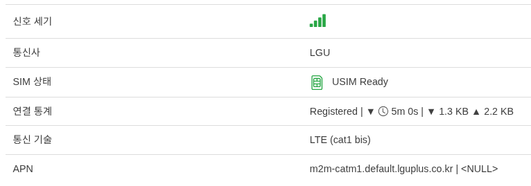
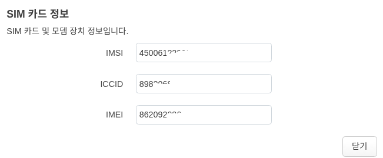
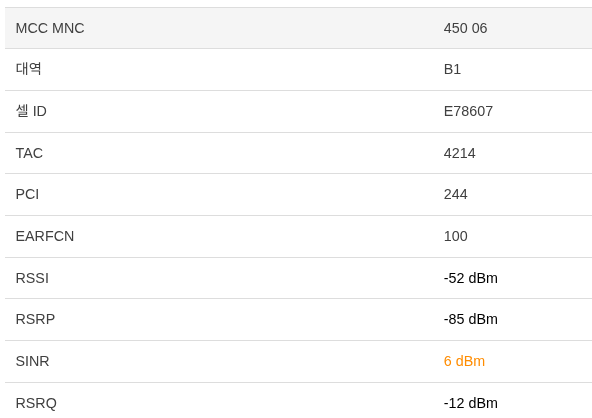

통신사 망 연동 설정
SIM 카드 장착 및 상태 확인


모뎀->모뎀 정보 화면에서 SIM 상태를 확인 할 수 있습니다.
SIM 상태 가 올바르게 Registered 상태인지 확인하십시요.
SIM에 대한 자세한 정보는 해당 메뉴에서 USIM 모양의 아이콘을 클릭 하면 표시됩니다.


APN 프로필 설정
모뎀->모뎀 정보->설정 화면에서 사용자가 직접 APN 을 설정 할 수 있습니다.
기본값은 NULL (자동 할당) 이며, 이에대한 표시는 모뎀->모뎀 정보 화면에 표시 됩니다.
APN LTE망에서 받은 APN 값 입니다. NULL 로 설정할 경우 | 가 표시되며, 사용자가 설정한 값 NULL이 표시 됩니다.
신호 세기 모니터링


신호 세기 모니터링은 모뎀->모뎀 정보 하단에 연관된 값들을 보여줍니다.